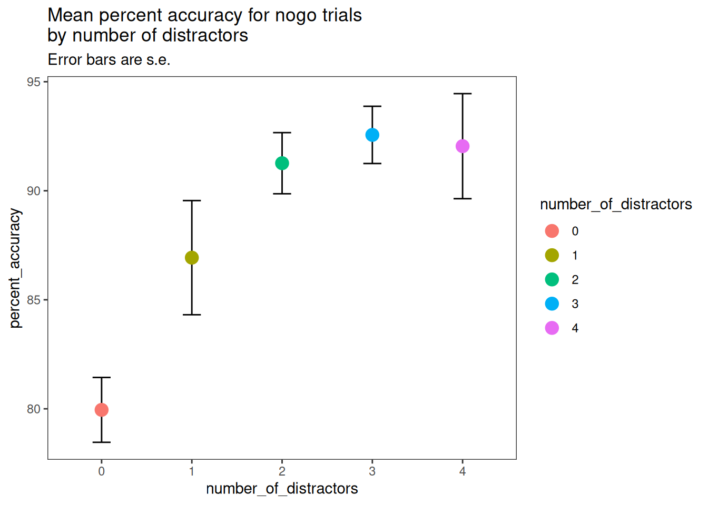
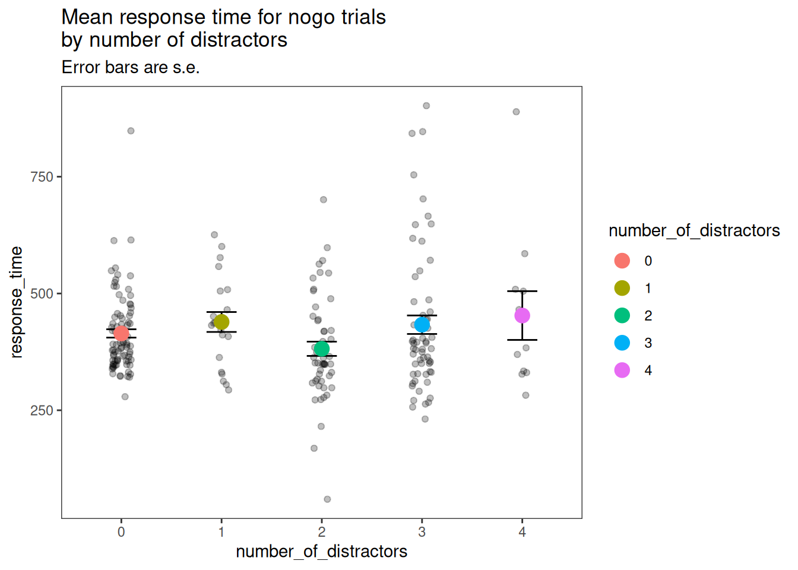
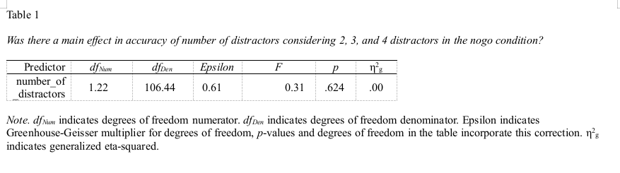

library("knitr")
library("kableExtra")
library("ez")
library("apaTables")
library("tidyverse")
library("easystats")
library("gt")7 Natasha
7.1 File reading
Read in the raw data files. Put out a tibble saying how many rows each raw data file has.
path_to_data = "data_supplied/natasha"
canonical_file = "5872a0d958ca4c00018ce4fe_natb3_2021-08-19_15h27.24.182.csv"
canonical_file_path = file.path(path_to_data, canonical_file)
canonical_column_names = read_csv(canonical_file_path, show_col_types = F)[0,]
all_results_files = dir(path_to_data, pattern="*.csv", full.names = TRUE)
file_level_info = tibble(candidate_number=as.numeric(NA), numrows=as.numeric(NA), identifier=as.character(NA), participant=as.character(NA))
for (i in seq_along(all_results_files)) {
# read in the candidate file
candidate_file = read_csv(all_results_files[i], col_types=cols(), name_repair = "minimal")
# Make a table, this column indicates what number the candidate is
file_level_info[i,"candidate_number"] = i
# This column indicates how many rows in the candidate file (336 is a full session)
file_level_info[i, "numrows"] = nrow(candidate_file)
# This column is for the filename
# for the raw data file for an individual participant
# We need this so that we can distinguish between participants
# whose value for participant is NA
file_level_info[i,"identifier"] <- str_replace(all_results_files[i], pattern=path_to_data, replacement="")
# this column is what they typed or had passed in, in the 'participant' field in the psychopy gui
file_level_info[i,"participant"] <-
ifelse("participant" %in% names(candidate_file),
as.character(candidate_file[1,"participant"]) %>% str_replace(" ","_"),
NA)
}
# convert character NA to missing value NA
file_level_info$participant[file_level_info$participant=="NA"]<-NA
# Convert spaces in participant names to underscore
file_level_info$participant <- file_level_info$participant Make a data frame (goodfiles) that contains all the participant data files that were complete (had 336 rows).
goodfiles=tibble()
pid = 0
for (i in seq_along(all_results_files)) {
candidate_file = read_csv(all_results_files[i], col_types=cols(), name_repair = "minimal")
if(nrow(candidate_file) == 336) {
pid = pid + 1
candidate_file$pid <- paste("P",str_pad(string=pid,width=2,pad="0"),sep="")
candidate_file$participant <-
# if the candidate file has a column named "participant", make a participant identifier for it
ifelse(("participant" %in% names(candidate_file)) && (!is.na(candidate_file[1,"participant"])),
paste(sep="","P",str_pad(string=pid,width=2,pad="0"),"_",as.character(candidate_file[1,"participant"]) %>% str_replace(" ","_")),
paste(sep="","P",str_pad(string=pid,width=2,pad="0"),"_","PARTICIPANT")
)
candidate_file <- candidate_file %>%
select(c(pid, participant, trials.thisN, stimulus,
key_resp.keys, CorrAns, key_resp.rt,
distractor1, distractor2, distractor3, distractor4)) %>%
mutate(trials.thisN=trials.thisN+1)
goodfiles <- bind_rows(goodfiles,candidate_file)
}
}
goodfiles$pid = as_factor(goodfiles$pid)Change names of variables from raw data files, making goodfilesclean
goodfilesclean <- goodfiles %>%
rename(trial=trials.thisN, response_given=key_resp.keys, response_expected=CorrAns, rt=key_resp.rt) %>%
mutate(participant=as_factor(participant)) %>%
mutate(response_expected=replace_na(response_expected,"nogo")) %>%
mutate(response_expected=str_replace(response_expected,"space","go")) %>%
mutate(response_given=replace_na(response_given,"nogo")) %>%
mutate(response_given=str_replace(response_given,"space","go")) %>%
#if response expected matches response given, then return 1
mutate(accuracy=ifelse(response_given==response_expected,1,0)) %>%
mutate(condition=response_expected)Figure out how many distractors were on the screen in this trial, in goodfilesclean
goodfilesclean$n_distractors <- as.numeric(NA)
for (i in 1:nrow(goodfilesclean)) {
n=0
if(!is.na(goodfilesclean[i,"distractor1"])){n=n+1}
if(!is.na(goodfilesclean[i,"distractor2"])){n=n+1}
if(!is.na(goodfilesclean[i,"distractor3"])){n=n+1}
if(!is.na(goodfilesclean[i,"distractor4"])){n=n+1}
goodfilesclean[i,"n_distractors"] <- n
}Remove redundant columns saying what distractor was in that slot
goodfilesclean <- goodfilesclean %>%
select(-c(distractor1, distractor2, distractor3, distractor4))7.2 Summaries
dd=goodfilescleanThese are trial-level data – see that accuracy is 0 or 1 at this level of aggregation
kable(head(dd %>% select(-participant)))| pid | trial | stimulus | response_given | response_expected | rt | accuracy | condition | n_distractors |
|---|---|---|---|---|---|---|---|---|
| P01 | 1 | M | go | go | 0.6911 | 1 | go | 0 |
| P01 | 2 | Z | go | go | 0.3406 | 1 | go | 0 |
| P01 | 3 | X | go | nogo | 0.2936 | 0 | nogo | 0 |
| P01 | 4 | W | go | go | 0.5740 | 1 | go | 0 |
| P01 | 5 | X | nogo | nogo | NA | 1 | nogo | 0 |
| P01 | 6 | W | go | go | 0.3673 | 1 | go | 0 |
Note
Say what this does to make dd2
dd2 <- dd %>%
group_by(pid, condition, n_distractors) %>%
summarise(percent_accuracy=100*mean(accuracy, na.rm=TRUE),
response_time=1000*mean(rt, na.rm=TRUE))Print one participant’s entry in dd2.
Note
Explain NaN entries in the context of a go / nogo task –it is correct to refrain from responding in nogo. See that RT of NaN yields accuracy 100%
kable(head(dd2, 6))| pid | condition | n_distractors | percent_accuracy | response_time |
|---|---|---|---|---|
| P01 | go | 0 | 97.61905 | 425.3687 |
| P01 | nogo | 0 | 71.42857 | 343.7417 |
| P01 | nogo | 1 | 100.00000 | NaN |
| P01 | nogo | 2 | 100.00000 | NaN |
| P01 | nogo | 3 | 86.36364 | 312.2667 |
| P01 | nogo | 4 | 100.00000 | NaN |
Collapse over individual participants for condition means
dd3 <- dd %>%
group_by(condition, n_distractors) %>%
summarise(percent_accuracy=100*mean(accuracy, na.rm=TRUE),
response_time=1000*mean(rt, na.rm=TRUE))View condition means
kable(dd3)| condition | n_distractors | percent_accuracy | response_time |
|---|---|---|---|
| go | 0 | 94.11526 | 471.7388 |
| nogo | 0 | 79.95130 | 412.6192 |
| nogo | 1 | 86.93182 | 443.0304 |
| nogo | 2 | 91.26420 | 379.9146 |
| nogo | 3 | 92.56198 | 409.8243 |
| nogo | 4 | 92.04545 | 454.0714 |
7.3 Plots
ggplot(data=dd2 %>% filter(condition=="nogo") %>% mutate(number_of_distractors=factor(n_distractors)),
aes(y=percent_accuracy, x=number_of_distractors)) +
stat_summary(fun.data = mean_se, geom = "errorbar", width=0.2) +
stat_summary(geom = "point", fun = "mean", aes(colour = number_of_distractors), size = 4) +
labs(title="Mean percent accuracy for nogo trials\nby number of distractors", subtitle="Error bars are s.e.")+
theme_bw()+
theme(panel.grid=element_blank())
ggplot(data=dd2 %>% filter(condition=="nogo") %>% mutate(number_of_distractors=factor(n_distractors)),
aes(y=response_time, x=number_of_distractors)) +
geom_jitter(width=0.1, alpha=0.25)+
stat_summary(fun.data = mean_se, geom = "errorbar", width=0.3) +
stat_summary(geom = "point", fun = "mean", aes(colour = number_of_distractors), size = 4) +
labs(title="Mean response time for nogo trials\nby number of distractors", subtitle="Error bars are s.e.")+
theme_bw()+
theme(panel.grid=element_blank())
7.4 Analysis
Was there a main effect of number of distractors considering 2, 3, and 4 distractors in the nogo condition?
First we need to filter out rows with less than 2 distractors
dd3 <- dd2 %>%
filter(condition=="nogo") %>%
filter(n_distractors >= 2) %>%
mutate(number_of_distractors=factor(n_distractors)) accuracy_anova_1 <-
ezANOVA(
data = dd3,
dv = percent_accuracy,
wid = pid,
within = number_of_distractors,
return_aov = TRUE,
type=2
)Reporting the analysis
One option is the function apa.ezANOVA.table() from the package apaTables.
apa.ezANOVA.table(
accuracy_anova_1,
correction = "GG",
table.title = "Was there a main effect in accuracy of number of distractors considering 2, 3, and 4 distractors in the nogo condition?",
filename="anovatable.doc",
table.number = 1
)
Table 1
Was there a main effect in accuracy of number of distractors considering 2, 3, and 4 distractors in the nogo condition?
Predictor df_num df_den Epsilon F p ges
number_of_distractors 1.22 106.44 0.61 0.31 .624 .00
Note. df_num indicates degrees of freedom numerator. df_den indicates degrees of freedom denominator.
Epsilon indicates Greenhouse-Geisser multiplier for degrees of freedom,
p-values and degrees of freedom in the table incorporate this correction.
ges indicates generalized eta-squared.
This looks ugly in the R output, but it produces a Word document with a table that you can copy and paste into your main Word document. Here’s a screenshot:

It is also possible to write your own function to get a nicer looking table:
prettify_anova = function(raw, cap="title"){
init = raw$ANOVA %>%
select(1:6) %>%
rename(sig=`p<.05`) %>%
mutate(
p = format(round(p,3), nsmall=3),
F = format(round(F,2), nsmall=2)
) %>%
mutate(
sig=case_when(
p < 0.001 ~ "***",
p < 0.01 ~ "**",
p < 0.05 ~ "*",
TRUE ~ "n.s."
)
)
gt(init) %>%
tab_header(cap) %>%
tab_options(table.align = "left")
}Then apply it to the object returned by ezANOVA (accuracy_anova_1 in our case) like so:
prettify_anova(accuracy_anova_1, cap="Main effect of number of distractors")| Main effect of number of distractors | |||||
|---|---|---|---|---|---|
| Effect | DFn | DFd | F | p | sig |
| number_of_distractors | 2 | 174 | 0.31 | 0.734 | n.s. |